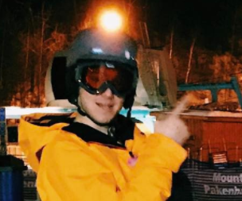

Weekly Log Book - Stanislav Rashevskyi

Week 1
Got back to school. Talked to David and Thomas (Project group) and planned a meeting for Friday Had 2 classes with Mike and set up my PC. Installed VM with Linux.
Started working on basic CAN bus code and setup GitHub repo for a project .
Had a meeting with a group to create a project plan and discuss everything (see One Note for details and GitHub for files).
Week 2
Completed Datacom Assignment 1 (about CAN bit-rate config).
During Software class created this personal logbook webpage in html and got a link to Project Logbook website from David
Agreed to all use same protocol and network layout at 125kBaud
Discussed Future plan of actions with team.
Week 3
Got 4 momentary single push buttons from Dave
Added LEDs and buttons to Axman for elevator car controller panel
Started working on elevator car controller software
Week 4
Completed elevator car controller software
Added and tested car controller with the rest of the system on CAN
Minor bugs were fixed
Recorded a demo video of whole elevator system functioning
Back to Main Page Copyright © 2017 Thomas Abdallah